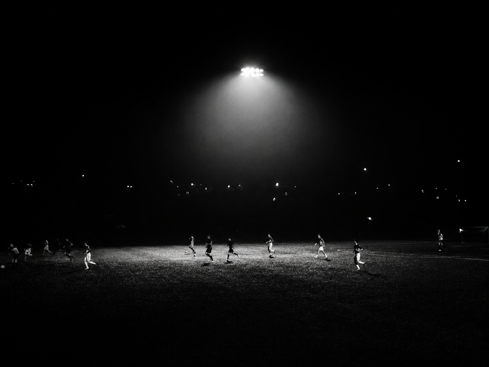
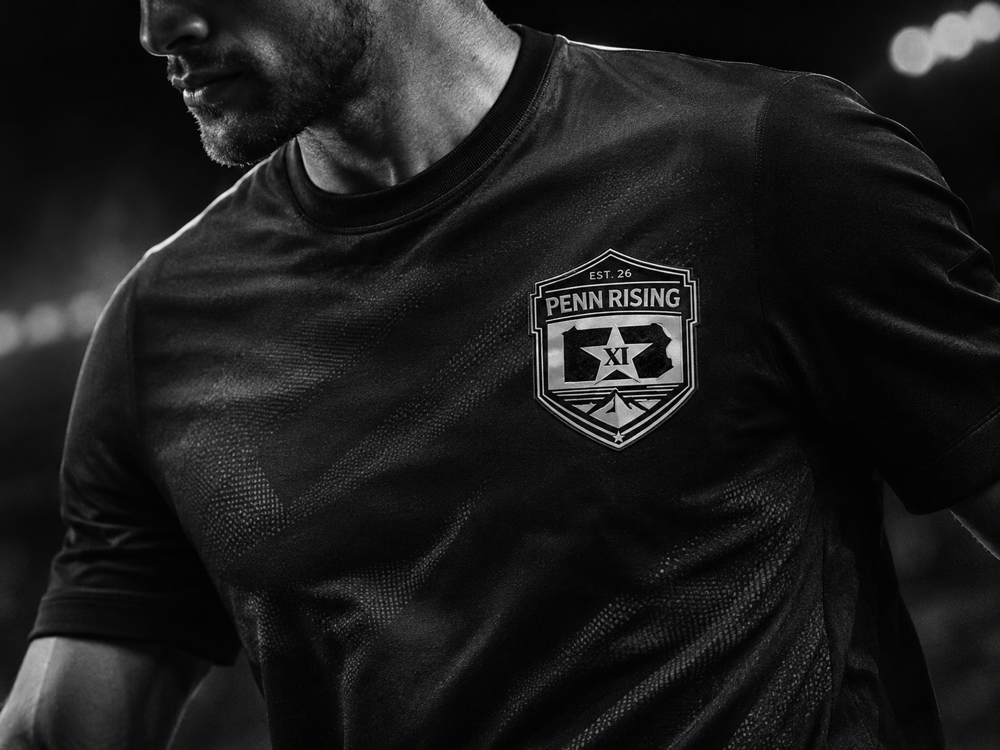

Technical skills are the foundation of a PR-XI player. Each player is expected to train on his/her own.

About
philosophy
Penn Rising XI represents a unified vision for the future of soccer in the Greater Lehigh Valley. PRXI is committed to player development, access, and long-term opportunity for all our athletes.
Penn Rising XI
For years, these clubs have independently developed high-level players while competing within the same regional landscape. By bringing these athletes together, Penn Rising XI transforms regional competition into collaboration, aligning coaching expertise, leadership, and infrastructure to better serve players in the Greater Lehigh Valley Area.
Our technical staff has expectations of all its players. Throughout the course of the year our players and teams should see growth in all facets of their game. Our coaches will Inspire our players to improve using on field training, match play and video. Competition, attitude and performance are our pillars of player/team growth.

PR-XI players are required to be physically fit. Endurance, speed, agility, and strength are the building blocks to a successful athletic performance. Coaches will promote healthy living habits.
PR-XI players will be able to read and process the game which will best help the team achieve its objectives.
PR-XI players will be mentally tough to handle the rigors of both training and matches. Off the field, the use of film is a critical component of player development.
Leadership is an essential component of a PR-XI player. The ability to communicate and express thoughts and instructions are invaluable skills.
Passion is a crucial element of our club as it fuels motivation, determination, and commitment. PR-XI players have a deep love of the game and a burning desire to succeed.
The backbone quality of PR-XI drives all successful players. All PR-XI players must be willing to grind to grow personally and as a team.
Be a good person on and off the field. High character individuals who positively contribute to our community are a staple for a PR-XI player.